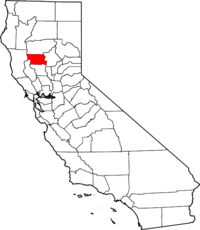

California's Rice Growers
Since 1986
Khan and Daughters grows medium grain Calrose rice, a Japanese variety known for its sticky texture and pearly white grain. This grain has thrived in the Northern California climate for over 160 years. The name derives from "rose" meaning a medium grain shape, and "cal" signifying the California origin and production.
Khan and Daughters is a fully female owned and operated rice growing association. Owner, Irum Khan, is the only female farmer of Pakistani descent in the state of California.

Contact Us for More Information